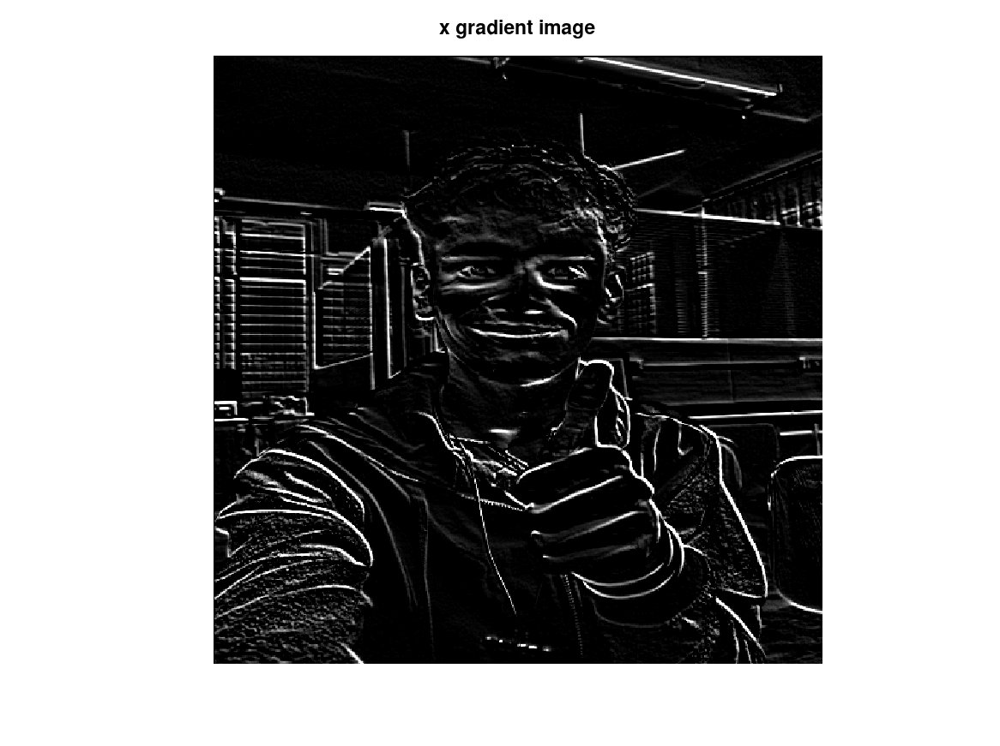
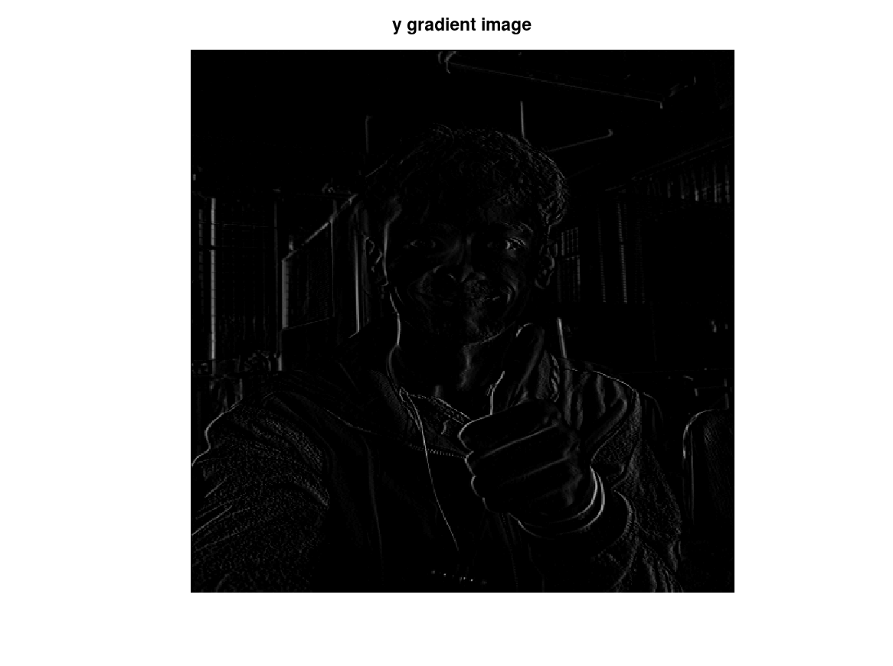
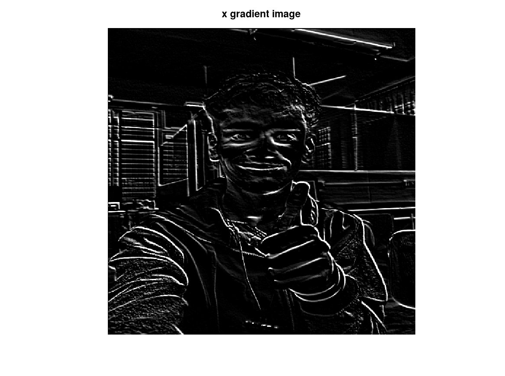
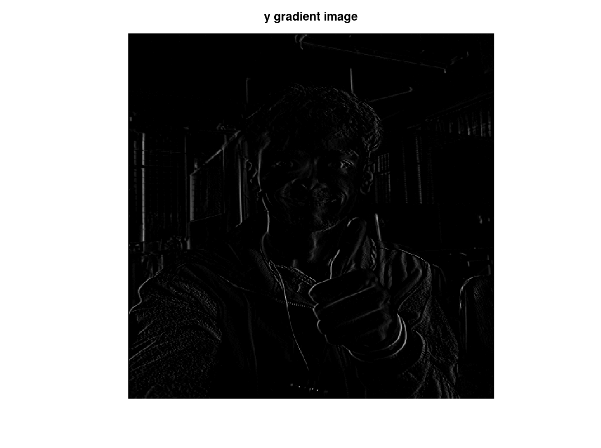

SOBEL_1
clc;
clear all;
f = double(imread('Img_3.tif'));
[row, col] = size(f);
wx = [-1 -2 -1; 0 0 0; 1 2 1];
wy = [-1 0 1 ; -2 0 2 ; -1 0 1 ];
for x=2:1:(row-1)
for y=2:1:(col-1)
gx(x,y) = f(x-1, y-1)*wx(1,1) + f(x-1, y)*wx(1,2) + f(x-1, y+1)*wx(1,3) +...
f(x, y-1)*wx(2,1) +f(x, y-1)*wx(2,2) +f(x, y-1)*wx(2,3) +...
f(x+1, y-1)*wx(3,1) +f(x+1, y-1)*wx(3,2) +f(x+1, y-1)*wx(3,3);
gy(x,y) = f(x-1, y-1)*wy(1,1) + f(x-1, y)*wy(1,2) + f(x-1, y+1)*wy(1,3) +...
f(x, y-1)*wy(2,1) +f(x, y-1)*wy(2,2) +f(x, y-1)*wy(2,3) +...
f(x+1, y-1)*wy(3,1) +f(x+1, y-1)*wy(3,2) +f(x+1, y-1)*wy(3,3);
endfor
endfor
figure(1), imshow(uint8(f)) , title("orignal image")
figure(2), imshow(uint8(gx)) , title("x gradient image")
figure(3), imshow(uint8(gy)) , title("y gradient image")
 
